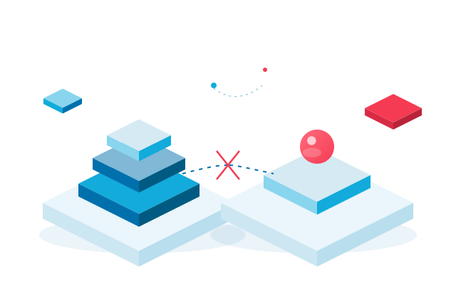

Every organization we work with has a working AI demo. Very few have a working answer to a simpler question: who owns the model on the Monday after go-live?
The demo optimizes for surprise. The operating model optimizes for repetition. Those are different systems, staffed by different people, measured in different rooms. A pilot can succeed on its own terms and still leave nothing behind: no owner, no monitored input, no fallback, no line in the budget.
That gap is not a technology problem. It is a handover problem. And handovers are designable.
A pilot is a decision to learn. A product is a decision to be responsible.
The move from one to the other is the whole job. It deserves a plan, a date and a named owner, not an optimistic slide.
01. The demo is not the operating model
In a demo, the model meets a curated case and a patient audience. In production, it meets missing fields at 02:00, a customer who does not fit the training set, and a queue of people who need an answer before the next shift.
Most stalled programs we see are not blocked by model quality. They are blocked by the unglamorous joins: a data contract nobody signed, an exception path nobody tested, a service owner nobody named. The model is usually the least surprising part of the system.
This is good news. Handovers can be designed, tested and rehearsed. They can also be skipped, which is why so many pilots arrive at go-live with a model and no service.
02. Four handovers that decide the outcome
We look for four transfers of responsibility. If any one of them is missing, the service is running on borrowed time.
-
Ownership: from the build team to the business owner
The question is not “who sponsors this?” It is “whose target moves if the model is wrong?” If the answer is a steering committee, the handover has not happened. A service catalog entry with a name, a budget and an escalation path is better evidence than a signed-off slide.
-
Data: from an extract to a contract
The demo reads a snapshot. The service reads a living feed. Someone on the source system has to guarantee schema, freshness and quality next quarter. Without that, the model is only as reliable as an undocumented spreadsheet.
-
Risk: from a review to runtime
A risk review describes what could go wrong. Runtime describes what to do when it does. The service needs thresholds, a human review path, a rollback and an incident route that a tired operator can follow at 02:00.
-
Measurement: from accuracy to outcome
Accuracy is a property of the model. Decision latency, exception rate and cost per decision are properties of the service. If the operating number does not move, the organization has bought a demo with a maintenance bill.
03. What good handover looks like
Good handover is boring in the best way. It is visible in a service catalog, a data contract, a runbook and a review date. None of those artifacts are glamorous. All of them are testable.
| Handover | Question to ask | Evidence it happened |
|---|---|---|
| Ownership | Who is accountable for the service? | A name in the service catalog, with budget and escalation |
| Data | Which input can stop the service? | A monitored data contract with a documented fallback |
| Risk | Who can switch it off? | A tested rollback and an incident path someone has walked |
| Measurement | Which operating number moves? | A baseline, a target and a date to review both |

04. Measure the handover, not the demo
Demo metrics flatter the model. Handover metrics tell you whether the organization can carry it. Four numbers are enough to start a useful conversation:
- Decision latency. Time from input to a human decision, before and after. If it has not moved, the service is not in the workflow yet.
- Exception rate. How often the model hands work back to a person, and why. A rising rate is an early warning, not a failure.
- Coverage. The share of real cases the service actually sees. A model that only meets easy cases is a demo with a queue.
- Cost per decision. Inference, review and rework in one number. This is the number a finance partner will ask for anyway.
None of these require a new platform. They require agreement on what the service is for, and the discipline to look at the same four numbers every month.
We stopped asking whether the model was good enough and started asking who would answer the phone when it was wrong. That changed the design.Operations director, European insurance groupComposite quote for layout reference. Replace with an approved client quote before publication.
The making is the point
“Value in the making” is not a slogan about effort. It describes where value actually lives: in the unglamorous joins between a model and the people who use it. Put a name, a number and a switch on every one.
Working session
Bring us the handover. We will map the service, the owners and the gap.
In 90 minutes, we will trace one live use case from input to decision, name the missing transfers and leave you with a one-page plan for the next go-live.